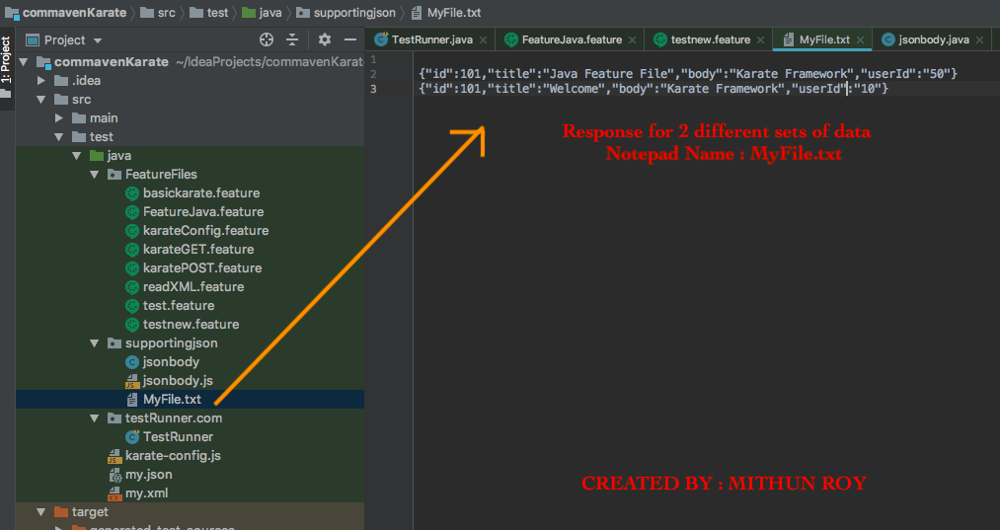
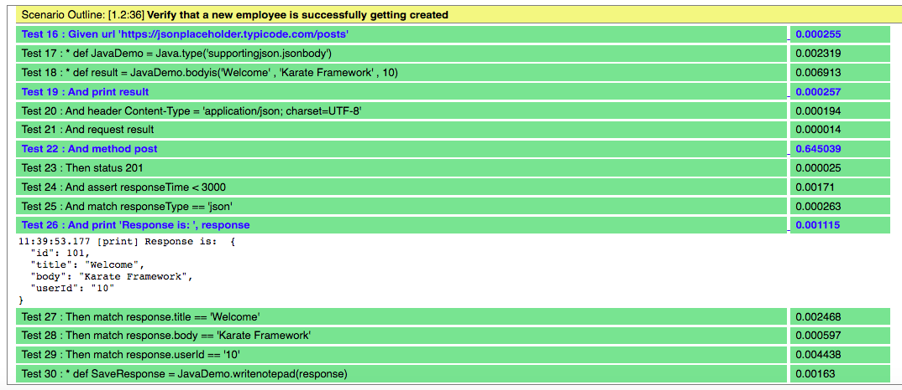
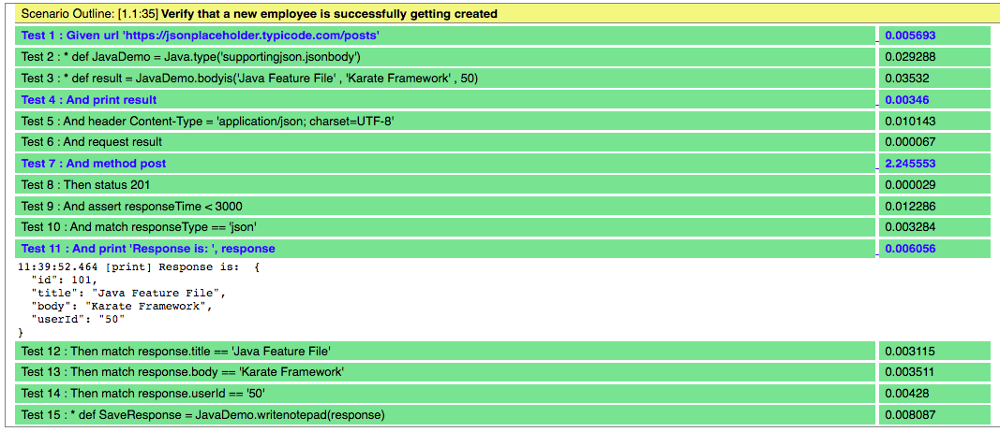

This examples shows saving Response into a NOTEPAD
Java Class is written as :
package supportingjson;
import java.io.FileWriter;
import java.io.IOException;
public class jsonbody {
public static String writenotepad(String text){
try {
FileWriter writer =
new FileWriter("/Users/notepadPath/MyFile.txt",
true);
//writer.write("Hello World");
writer.write("\r\n"); // write new line
writer.write(text);
writer.close();
} catch (IOException e) {
e.printStackTrace();
}
return "PASS";
}
}
We can write below pointers from above code :
package name is 'supportingjson'
class name is 'jsonbody'
method name is 'writenotepad'
writenotepad method accepts 1 arguments: 'text'
Note: This 'text' is response.
Code to interact Feature file with Java class file
* def JavaDemo = Java.type('supportingjson.jsonbody')
* def SaveResponse = JavaDemo.writenotepad(response
Complete Feature File Code can be written as below :
######### https://manual2Automation.com ###############
####### Created By :: MITHUN ROY ################
Feature: Call a Java Method From Feature File
# Call Java Function Using JavaScripts:
Scenario Outline: Verify that a new employee is successfully getting created
Given url 'https://jsonplaceholder.typicode.com/posts'
* def JavaDemo = Java.type('supportingjson.jsonbody')
* def result = JavaDemo.bodyis('<Title>' , '<Body>' , <UserId>)
And print result
And header Content-Type = 'application/json; charset=UTF-8'
And request result
And method post
Then status 201
And assert responseTime < 3000
And match responseType == 'json'
And print 'Response is: ', response
Then match response.title == '<Title>'
Then match response.body == '<Body>'
Then match response.userId == '<UserId>'
* def SaveResponse = JavaDemo.writenotepad(response)
Examples:
|Title|Body|UserId|
|Java Feature File |Karate Framework|50|
|Welcome |Karate Framework|10|
Notepad with Response is shown as below :

Test Report is generated as below :


2 test report section have been created as we are passing 2 sets of parameter.